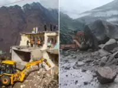
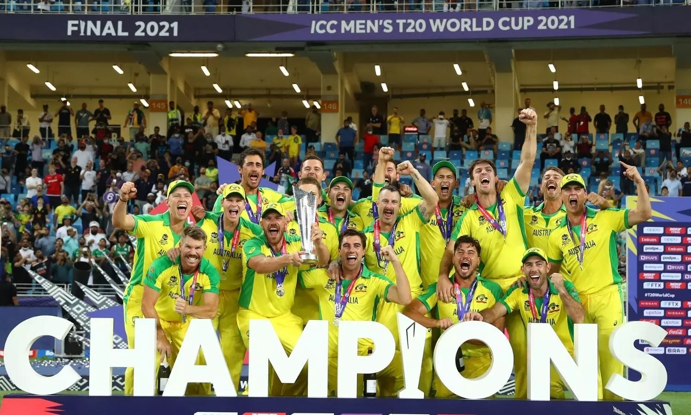

Home
Science & Technology
News
Economic
Information
News
Lunar crown: Chandrayaan-3 successfully lands at lunar south pole
 In a giant leap for its space programme, India's Moon mission Chandrayaan-3 touched down on the lunar south pole on Wednesday, propelling the country to an exclusive club of four and making it the first country to land on the uncharted surface.
In a giant leap for its space programme, India's Moon mission Chandrayaan-3 touched down on the lunar south pole on Wednesday, propelling the country to an exclusive club of four and making it the first country to land on the uncharted surface.
India gets a new Parliament
Prime Minister Narendra Modi on May 28 inaugurated the new Parliament building and installed the sacred 'Sengol' in the Lok Sabha chamber. The new building has 888 seats in the Lok Sabha chamber and 384 seats in the Rajya Sabha chamber.
Supreme court upholds Article 370 abrogation
In a historic decision on December 11, the Supreme Court delivered its long-awaited verdict on the contentious issue of Article 370. The Supreme Court upheld the government's decision to repeal Article 370, which granted special status to the former state of Jammu and Kashmir and said steps should be taken to hold elections in the assembly by September 30 of next year.
Sinking serenity: Land subsidence in Joshimath

Joshimath, the gateway to famous pilgrimage sites like Badrinath and Hemkund Sahib and international skiing destination Auli, faced a major challenge due to land subsidence. It sank gradually with huge cracks developing in houses, roads and fields there, with over 65% of houses in town suffering due to the subsidence.
Heartbreak for team India; Australia create another record

Australia clinched their sixth ICC Cricket World Cup title, defeating India by 6 wickets. Travis Head's stellar 137-run innings led the way, earning applause from his teammates for his outstanding performance on the grand stage. This was the only defeat team India suffered in the entire competition, which was held on its soil.
Rails of tragedy: Balasore triple train collision claims more than 280 lives
The Shalimar-Chennai Central Coromandel Express, Bengaluru-Howrah Super Fast Express and a goods train were involved in the pile-up, which was described as one of India's worst train accidents. More than 280 people lost their lives and five others succumbed to their injuries in hospitals, while 1,208 were injured.
India in space: Isro successfully launches its solar mission
 On September 2 Isro's Aditya-L1 mission was launched. It is India's first mission dedicated to studying the Sun, specifically the photosphere, chromosphere, and corona of Sun. It has 7 distinct payloads developed, all developed indigenously. Five by Isro and two by academic institutes in collaboration with the space agency.
On September 2 Isro's Aditya-L1 mission was launched. It is India's first mission dedicated to studying the Sun, specifically the photosphere, chromosphere, and corona of Sun. It has 7 distinct payloads developed, all developed indigenously. Five by Isro and two by academic institutes in collaboration with the space agency.
An unwanted record: A record 143 MPs suspended
 A total of 143 MPs - 97 from Lok Sabha and 46 from Rajya Sabha - were suspended for creating a ruckus and disrupting proceedings in both Houses, while they were demanding a statement from Union Minister Amit Shah about the Parliament security breach incident.
A total of 143 MPs - 97 from Lok Sabha and 46 from Rajya Sabha - were suspended for creating a ruckus and disrupting proceedings in both Houses, while they were demanding a statement from Union Minister Amit Shah about the Parliament security breach incident.